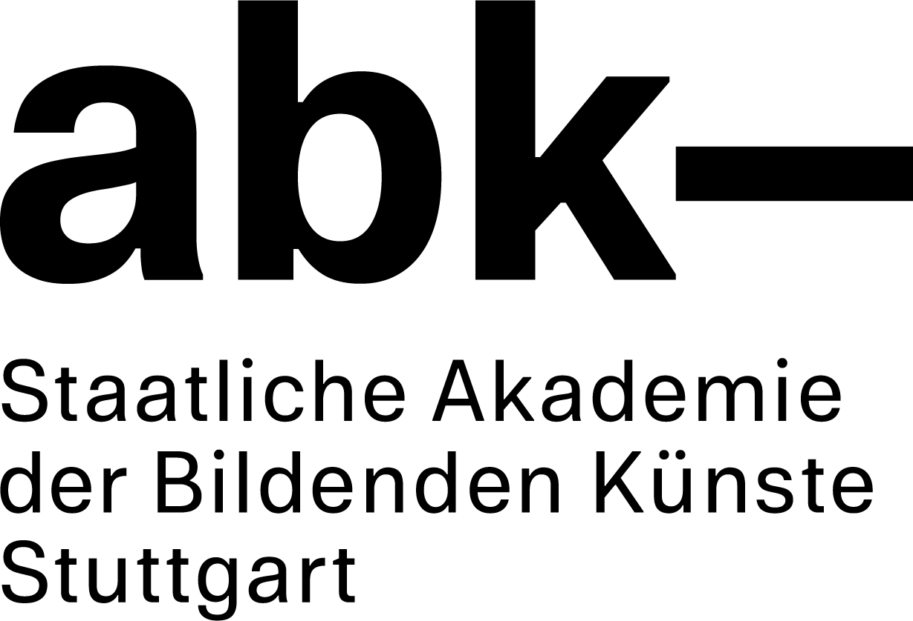
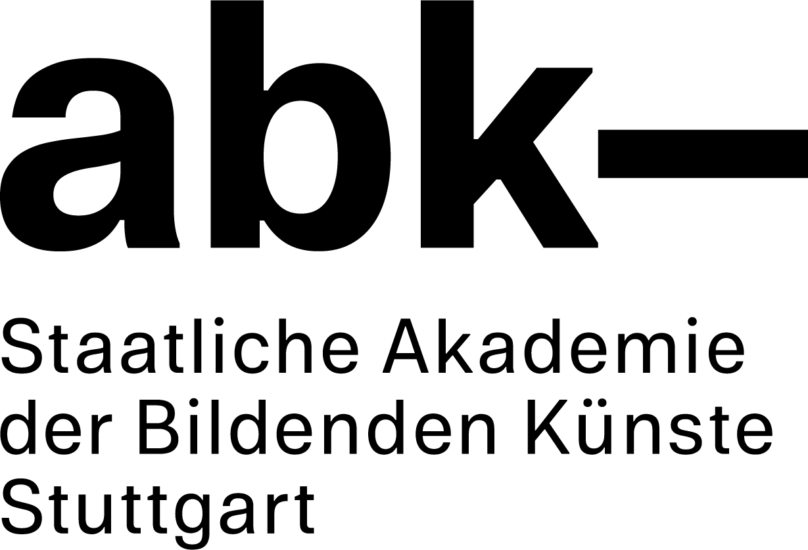

ABK Stuttgart
Corporate Design
2019
+
Das neue Logo der ABK Stuttgart leitet sich aus dem Kürzel im Namen ab – der Gedankenstrich im
Anschluss verbindet
die Akademie mit dem, was danach kommt, es folgt Freiraum. Die Schrift wurde ebenfalls im Zuge
des
neuen
Corporate Designs von Stefanie Schwarz und Dirk Wachowiak entwickelt und zeichnet sich aus durch
Details und Verweise
aus der traditionsreichen Schriftgeschichte der ABK Stuttgart. Die Geschäftsausstattung ist
möglichst funktional
und zurückhaltend gestaltet.
Neben der Geschäftsausstatttung, bestehend aus Briefpapier, Visitenkarten, Urkunden, Stempel,
Berichte etc. entstehen
auch Flaggen und Hausmeisterbekleidung. Außerdem ist zur Zeit ein umfassenden
Orientierungssystem
für den Campus
und alle Gebäude darauf in Arbeit.
- Logo
- Letter paper
- Business cards
- Flags
- Folder
with
- Jasmina Begovic
- Raphael Berg


Narrating Africa
exhibition
in Zusammenarbeit mit dem Literaturmuseum der Moderne Marbach Ausstellung „Narrating
Africa“ seit November 2019 bis August 2021 flexibles Ausstellungs- und Raumkonzept durch Magnete
visuelle Sprache für unterschiedliche Medien entstanden in der Klasse Cluss
https://www.dla-marbach.de/museen/wechselausstellungen/africa-digital/ So lautet die Beschreibung zur
Ausstellung „Narrating Africa“ im Literaturmuseum der Moderne, zu der wir ein System entwickelten, um
Inhalte unterschiedlicher Kuratoren in einen Ausstellungsraum zu übertragen. Das Gestaltungskonzept
bietet die Möglichkeit die Ausstellung über einen längeren Zeitraum step by step um Inhalte zu erweitern
und untereinander durch Kommentierungen zu verknüpfen. Die Tischplatten sind mit magnetischer Ferrofolie
bedruckten Bildmotiven und Zitaten bezogen und werden um erweiterbare Karten und Leporellos ergänzt, die
mit Magneten bestückt am Tisch haften, aber auch in die Hände genommen werden können. Der Besucher wird
eingeladen sich auf Sitzkissen niederzulassen, die verschiedenen Inhalte auf- und zu entdecken und sich
einem ungewöhnlichen Raumgefühl hinzugeben. Die visuelle Sprache findet sich auf begleitenden Medien,
wie Plakaten, Postkarten, dem Programm oder die Website wieder.
- Logo
- Letter paper
- Business cards
- Flags
- Folder
2019
with
- Sonja Schwarz


Gleismediale
Flyer, Leitsystem
2019
+
in Zusammenarbeit mit dem Literaturmuseum der Moderne Marbach Ausstellung „Narrating
Africa“ seit November 2019 bis August 2021 flexibles Ausstellungs- und Raumkonzept durch Magnete
visuelle Sprache für unterschiedliche Medien entstanden in der Klasse Cluss
https://www.dla-marbach.de/museen/wechselausstellungen/africa-digital/ So lautet die Beschreibung zur
Ausstellung „Narrating Africa“ im Literaturmuseum der Moderne, zu der wir ein System entwickelten, um
Inhalte unterschiedlicher Kuratoren in einen Ausstellungsraum zu übertragen. Das Gestaltungskonzept
bietet die Möglichkeit die Ausstellung über einen längeren Zeitraum step by step um Inhalte zu erweitern
und untereinander durch Kommentierungen zu verknüpfen. Die Tischplatten sind mit magnetischer Ferrofolie
bedruckten Bildmotiven und Zitaten bezogen und werden um erweiterbare Karten und Leporellos ergänzt, die
mit Magneten bestückt am Tisch haften, aber auch in die Hände genommen werden können. Der Besucher wird
eingeladen sich auf Sitzkissen niederzulassen, die verschiedenen Inhalte auf- und zu entdecken und sich
einem ungewöhnlichen Raumgefühl hinzugeben. Die visuelle Sprache findet sich auf begleitenden Medien,
wie Plakaten, Postkarten, dem Programm oder die Website wieder.
- Logo
- Letter paper
- Business cards
- Flags
- Folder
with
- Jasmina Begovic
- Raphael Berg